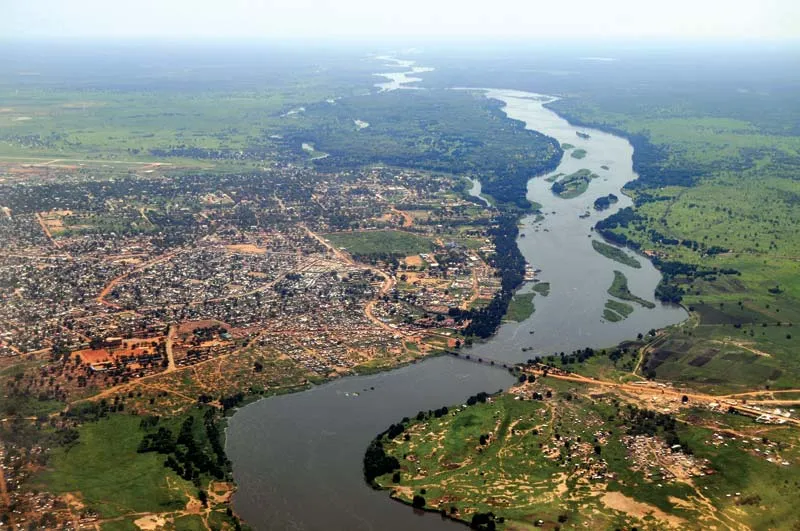
Africa · 11 countries
The Nile
The longest river in the world. Flows north through the Sahara Desert into the Mediterranean Sea.
6,650 kmlength
Egyptfamous for
Follow fresh water on the longest adventure of all — from a tiny mountain spring, through meandering valleys, all the way out to the sea.
A river is fresh water that flows across the land in a long channel — all the way from a mountain to the sea.
Most rivers begin high up in hills or mountains. The place where a river starts is called the source. The place where it ends — usually at the sea or a lake — is called the mouth.
Every river has a journey. Scientists split this journey into three parts, called the upper course, the middle course, and the lower course. Each part looks and behaves differently.
As a river travels, other smaller rivers flow into it. These helpers are called tributaries. Together, a main river and all its tributaries make a river system.

The longest river in the UK is the River Severn. It flows for about 220 miles — further than the distance from London to Manchester.
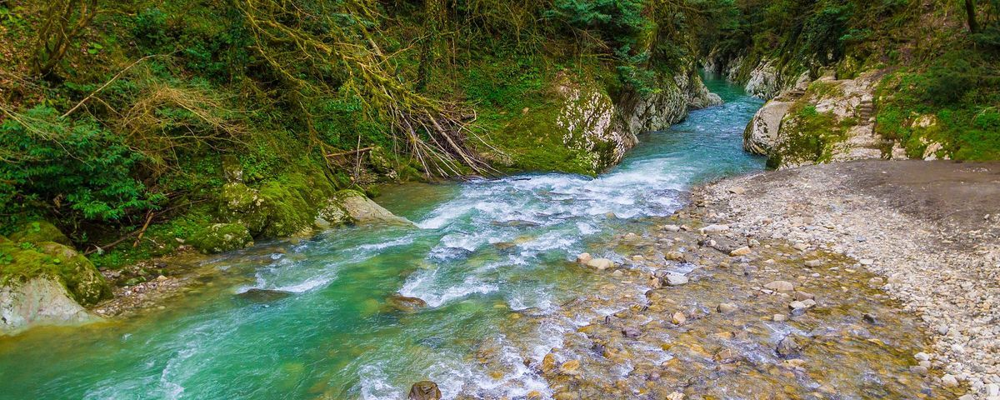
Fast and narrow. Cuts a V-shaped valley high in the hills.
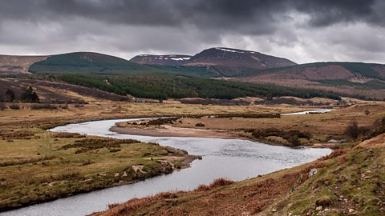
Wider and slower. Bends in big curves called meanders.
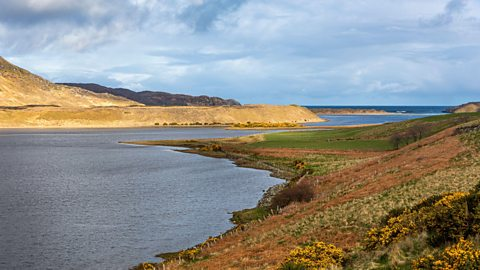
Wide and slow. Flows into the sea, lake, or another river.
High in the hills, a river has just been born. The water is cold, fast, and full of energy.
As the water rushes downhill, it carries small rocks and pebbles with it. This wearing-away of the land is called erosion.
Over thousands of years, the fast water cuts a deep groove into the rock. The sides of the groove are steep. This shape, like the letter V, is called a V-shaped valley.
When a hard layer of rock sits above a soft layer, the soft rock wears away underneath. The river drops suddenly over the edge and makes a waterfall.
Where the river drops over a cliff of hard rock.
Fast, bumpy water tumbling over rocks.
A deep, narrow valley with steep sides.
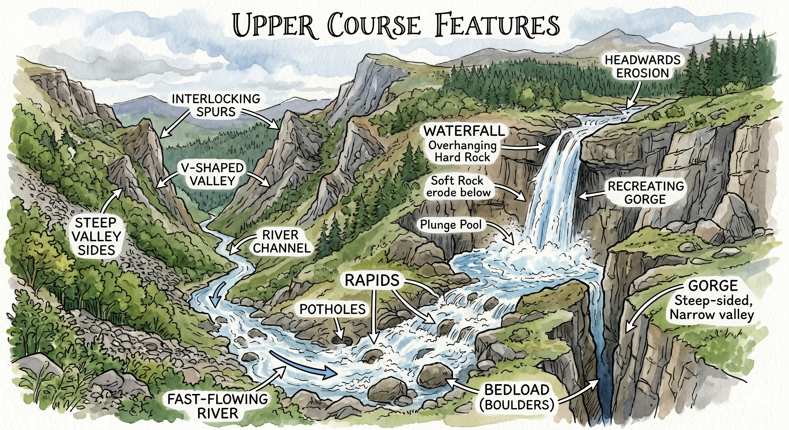
After the hills, the land flattens out. The river is no longer in a rush.
The river grows wider and deeper. Because the water is slower, it starts to drop — or deposit — the sand and mud it was carrying from the hills. This new ground builds up on the inside of bends.
The river begins to curve from side to side in big loops called meanders. On the outside of each bend, the water still pushes hard and wears the bank away. On the inside, it drops sand. Slowly, over many years, meanders wriggle and move across the landscape.
Sometimes a bend gets pinched off completely from the main river. The abandoned loop is left behind as a crescent-shaped lake called an oxbow lake.
Meanders form because water moves faster on the outside of a bend and slower on the inside. Fast water erodes; slow water deposits. Over time, the bend gets bigger and bigger.
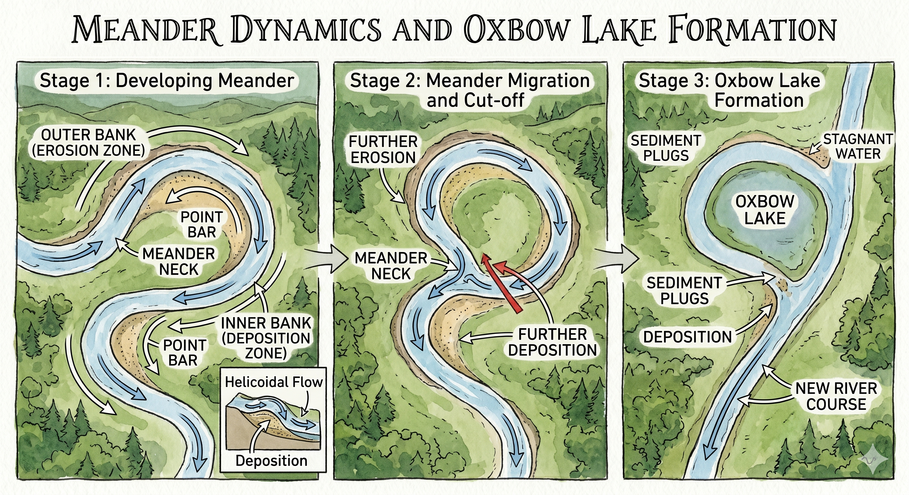
Near the end of its journey, the river is wide, slow, and full of silt.
The river is close to the sea. The land on either side is very flat. When heavy rain falls or snow melts, the river sometimes bursts its banks and spreads out across this flat land. This area is called a floodplain.
Floodplains are some of the best farmland in the world. The mud and sand left behind after a flood — called sediment — makes the soil very rich.
Ancient Egyptians built their whole civilisation along the floodplain of the River Nile for exactly this reason. The Nile flooded every year, and every year it left behind a fresh layer of soil so good they could grow all the food they needed.
Right at the end, the river usually widens into an estuary — the tidal mouth where fresh river water meets salty sea water.
Estuary — the wide, tidal mouth of a river where fresh river water meets salty sea water. London, Hull and Glasgow are all built on estuaries.
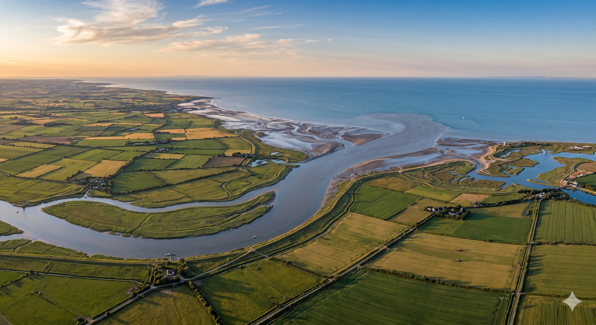
The United Kingdom has hundreds of rivers — they are the veins of the country.
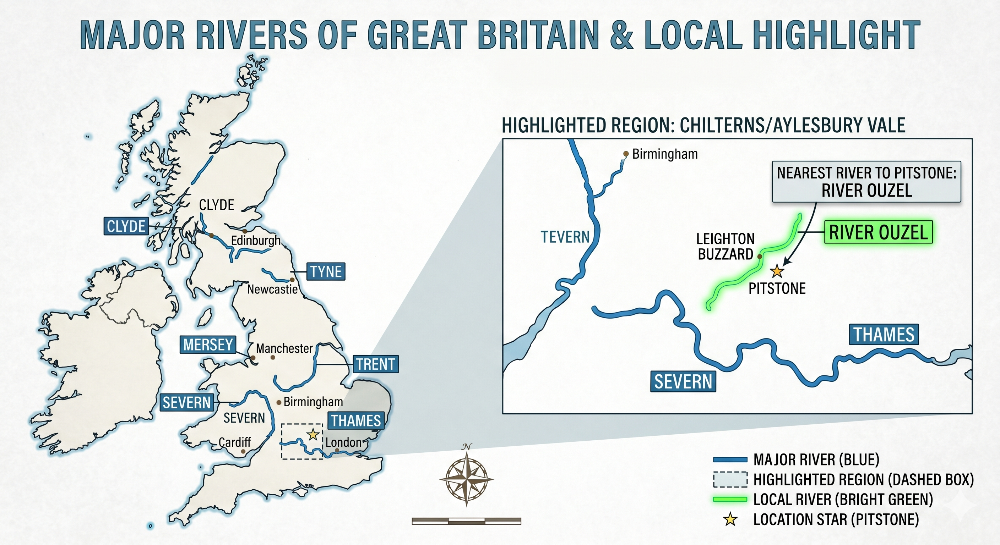
Rivers gave us our oldest towns and cities. People always settled where they could drink, wash, fish, and travel by boat.
Our nearest river is the River Ouzel, which flows through Pitstone. It is in the middle course — you can spot its gentle meanders as it winds across the fields.
These three are the most famous rivers in the UK:
Rivers have carried whole civilisations on their backs. Each of these four is longer than the entire length of Britain.

The longest river in the world. Flows north through the Sahara Desert into the Mediterranean Sea.
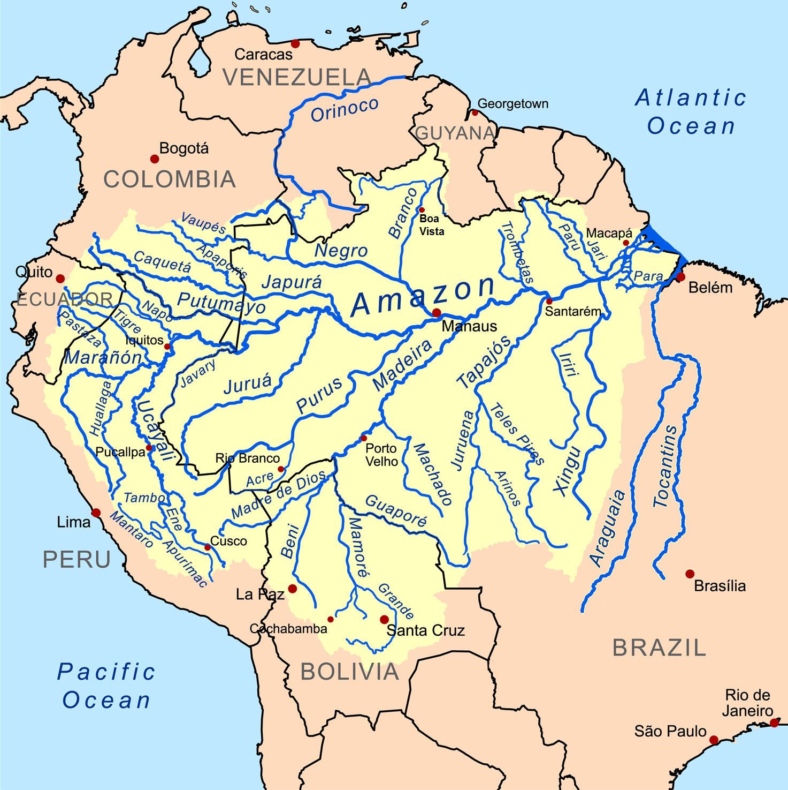
Carries more water than any other river on Earth. Runs through the world’s largest rainforest.
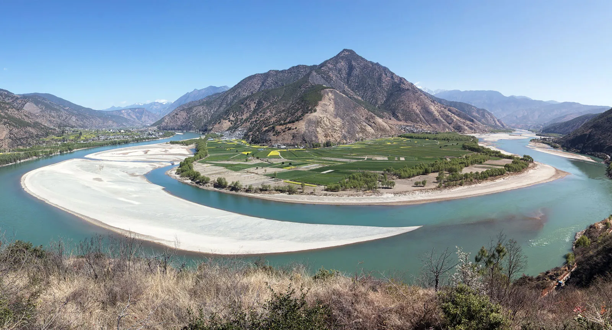
The longest river in Asia. Home to pink dolphins and giant dams.
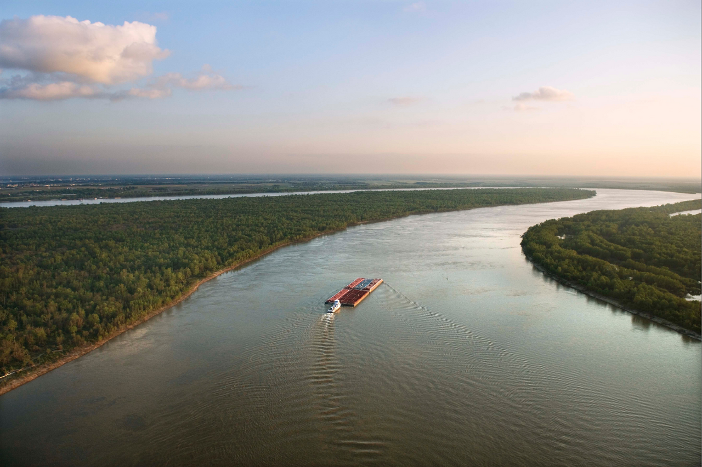
Splits the United States in half. Its delta forms a huge fan of land in the Gulf of Mexico.
The words every river explorer needs to know.
The place where a river begins.
Where a river ends, often the sea.
A smaller river that joins a bigger one.
A big bend or curve in a river.
Wearing the land away.
Dropping sand and mud.
Tiny bits of rock carried by water.
Flat land near a river that sometimes floods.
The ground at the bottom of a river.
The ground on either side of a river.
A natural shape on the Earth’s surface.
The wide tidal mouth where a river meets the sea.
Seven friendly questions. No rush — take your time.
In your own words, what is a river?
Name the three stages of a river. Where is the water fastest?
What is the difference between erosion and deposition?
Why did people build towns and cities on floodplains?
Explain how a waterfall is formed. Use the words ‘hard rock’ and ‘soft rock’.
Draw a simple diagram of a meander. Label the outer bank, inner bank, and point bar.
How does a meander turn into an oxbow lake? Describe each step.
What is a tributary? Can you name one tributary of the River Thames?
What is the longest river in the United Kingdom? Roughly how long is it?
What is the name of our nearest river, and which stage is it in — upper, middle, or lower?
The Nile, Amazon, Yangtze, Mississippi — which continent does each belong to?
Why is the Amazon so important to the whole planet, not just South America?
What is an estuary? Can you think of a UK city built on one?
Give three reasons why rivers are useful to humans.
What can cause a river to flood? Give two different reasons.
If you threw a paper boat into our local river, where would it end up? Try to trace its journey.